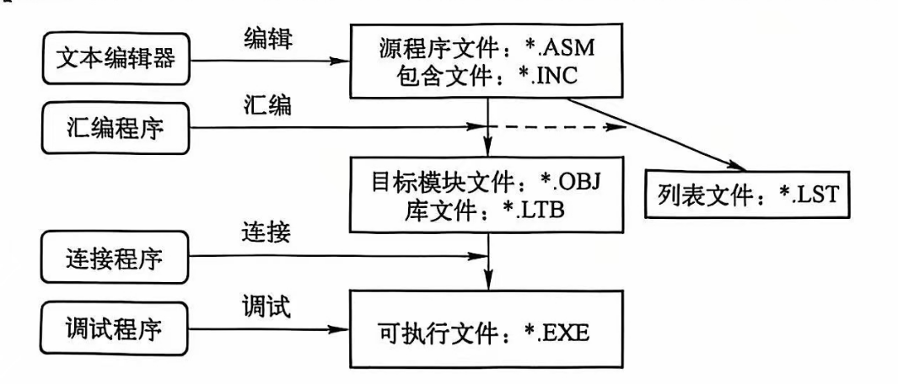

汇编语言程序设计笔记
1 汇编语言基础知识
本章是概念性章节，内容较少，直接列一个概念列表：
- 由冯 · 诺伊曼设计思想的计算机由五大部件组成：运算器、控制器、存储器、输入设备、输出设备。
- 数制：二进制、八进制、十进制、十六进制。
- 数制转换：低转高，乘权法；高转低，除基取余法。
- 数值的编码（计组的噩梦之一）：定点整数、原码、反码、补码、定点小数、浮点数。
- 数值编码：BCD码、ASCII码、Unicode编码。
- 寄存器：通用寄存器、段寄存器、指针寄存器、变址寄存器、控制寄存器、状态寄存器。
- 通用寄存器：数据寄存器（AX、BX、CX、DX）、指针寄存器（SP、BP）、变址寄存器（SI、DI）。
- 标志寄存器：状态标志（CF、PF、AF、ZF、SF）、控制标志（TF -> 单步标志、IF、DF、OF）、系统标志（NT、IOPL、VM、RF）。
- 存储格式：
- 数据的存储格式：小端方式（8086 采用的方式），低对低、高对高；大端方式：低对高、高对低。
- 同一个地址既可以看作字节单元的地址，也可以看作字单元的地址，还可以看作双字单元的地址。
- 存储器的分段管理：8086 把存储器分成若干段，每段的大小最大为 64KB，每个存储单元可表示为“段基地址 ：偏移地址”。段基地址是段的起始地址除以 16 后的值，即必须形如“XXXX0H”，偏移地址是段内偏移量（也称有效地址，EA），可以用 16 位表示。
-
段寄存器的作用：
- CS：代码段寄存器，存放代码段的段基地址。指令寄存器 IP 存放指令的偏移地址，处理器利用 “CS:IP” 访问下一条指令。
- SS：堆栈段寄存器，存放堆栈段的段基地址。堆栈指针 SP 存放栈顶的偏移地址，处理器利用 “SS:SP” 访问堆栈段。
- DS：数据段寄存器，存放数据段的段基地址。
- ES：附加段寄存器，附加的数据段，也用于数据的保存。
-
（重要）寻址方式：
- 立即数寻址（立即寻址）：指令中直接给出操作数。
- 寄存器寻址：指令中直接给出寄存器名。
- 储存器寻址：直接寻址（指令中直接包含了有效地址，如：mov ax, [1000H]）；寄存器间接寻址（指令中给出寄存器名，寄存器中存放有效地址，如：mov ax, [bx]）；寄存器相对寻址(指令中给出寄存器名和偏移量，寄存器中存放基地址，如：mov ax, [bx+10H])；基址变址寻址（指令中给出基址寄存器、变址寄存器和偏移量，如：mov ax, [bx+si]）；相对基址变址寻址（指令中给出基址寄存器、变址寄存器、偏移量和段寄存器，如：mov ax, [bx+si+10H]）。
- 隐含寻址方式
-
比例因子是386及其后继机型新增加的寻址方式中的一个术语，其值可为1，2，4或8。比例因子（1、2、4、8）只能与变址寄存器同时使用。
-
外设中，每个接口包括一组寄存器： 数据寄存器 状态寄存器 命令寄存器
- 输入端口的 8 位数据
1 2
mov dx,1234h in al,dx
2 8086 的指令系统
各种指令
- 数据传送指令：
- mov(reg/mem, imm; reg/mem/seg, reg; reg/seg, mem; reg/mem, seg)
- xchg(reg ↔ reg/mem 或 reg/mem ↔ reg)、xlat(al ← ds:[bx+al])；
- 堆栈操作指令：push、pop（注意 push 的时候地址减少，pop 的时候地址增加）；
- 标志传送指令：lahf、sahf、pushf、popf；
- 地址传送指令：lea、lds(Load Pointer Using DS)、les(Load Pointer Using ES)；
- 算术运算指令：add、adc、inc、sub、sbb、dec、cmp
- neg：用 0 减去操作数（会导致
CF=1），结果相当于按位取反加 1 - mul r8(16)/m8(16),
- ax ← al(x) * r8(16)/m8(16)
- imul r8(16)/m8(16)
- ax ← al(x) * r8(16)/m8(16)
- div r8(16)/m8(16)
- al(ax) ← ax(dx.ax) 除 r8(16)/m8(16) 的商
- ah(dx) ← ax(dx.ax) 除 r8(16)/m8(16) 的余数
- idiv
- neg：用 0 减去操作数（会导致
- 符号拓展指令：cbw（拓展到 AX）、cwd（拓展到 DX）；
- 逻辑运算指令
- 影响标志位：and、or、xor、test、neg
- 不影响标志位：not
- 除了 NOT 不影响标志位外，其他所有逻辑运算指令执行完后，OF 和 CF 一定是 0
- 移位指令：shl、shr、sal、sar、rol、ror、rcl、rcr；
- 控制转移指令：jmp，太多了，可查 55 页表 2-3。
- 循环指令：loop、loopz、loopnz；
- 子程序指令：call（调用子程序）、ret（从子程序返回主程序）
- 中断指令：int（内部中断）、iret（外部中断）；
状态标志
- CF：进位标志，无符号数运算时，是否溢出，即最高位是否有进位或借位。检测最高有效位（MSB，Most Significant Bit）是否产生了进位或借位
- OF：溢出标志，有符号数运算时，是否溢出，运算结果是否超出范围。检测最高有效位（MSB，符号位） 和 次高位的进位 是否不一致
- CF 和 OF 的区别：CF 表示无符号整数运算结果是否超出范围，超出范围后加上进位或借位运算结果依然正确；OF 表示有符号整数运算结果是否超出范围，超出范围后加上进位或借位运算结果不正确。
- SF：符号标志，结果的最高位。
- ZF：零标志，结果是否为 0。
- PF：奇偶标志，运算结果低八位中 1 的个数为 0 或者偶数时，PF=1；否则 PF=0。
- 判断是否影响标志位原则：是否发生了算数、测试、比较、移位，发生了往往是影响标志位的
- 特殊指令
INC和DEC不会影响CF。 - stx、clx 类是置位，cmc 是对 CF 的取反
算术指令
- 加法指令 ADD、ADC、INC
- 减法指令 SUB、SBB、DEC、NEG、CMP
- 乘法指令 MUL、IMUL
- 除法指令 DIV、IDIV
- add bx,es 是错误的
符号拓展
对于无符号数，高位置 0 即可拓展；对于有符号数，分别用 CBW 或 CWD 指令进行符号拓展。
十进制调整指令
为了实现在十六进制下进行十进制运算而进行的，比如 68h + 28h = 90h，执行 daa 后就会变成 96h，即十进制调整。
类似还有减法调整指令，das。还分压缩 BCD 码和非压缩 BCD 码，区别是前者用半个字节表示一个十进制位，而后者用一个字节表示一个十进制位。
位操作指令
- 逻辑运算指令 AND、OR、XOR、NOT、TEST(AND)
- 移位指令 SHL、SHR、SAL、SAR、ROL、ROR、RCL、RCR
转移类指令
- 无条件转移指令 JMP
- 利用 ZF：JZ、JE、JNZ、JNE
- 利用 SF：JS、JNS
- 利用 OF：JO、JNO
- 利用 PF：JP、JPE、JNP、JPO
- 利用 CF：JC、JB、JNAE、JNC、JNB、JAE
- 比较无符号数时用 Above 和 Blow，而有符号数时用 Greater 和 Less。
- 循环指令：LOOP(CX!=0)、LOOPZ/LOOPE(CX!=0 && ZF=1)、LOOPNZ/LOOPNE(CX!=0 && ZF=0)、JCXZ(CX!=0)
子程序指令
CALL、RET
中断指令
-
中断类型
- 外部中断
- 可屏蔽中断
- 非屏蔽中断
- 内部中断（亦称“异常”）
- 除法错中断
- 指令中断
- 溢出中断
- 单步中断
- 外部中断
-
中断过程
- 中断向量表
- 每个中断的起始地址是 4 的倍数
- 每个中断共两个字，低字存放中断服务程序的偏移地址 IP，高字存放段地址 CS
- 内存的地址区域从 00000H 开始为中断向量表
- 中断向量表
3 汇编语言程序格式
汇编语言程序的开发
-
标号规定
- 最长 31 个字符
- 第一个字符不能是数字
- ? $ _ @可出现在标号的任意位置，但? $不能单独使用
- . 只能出现在起始位置
- 一个程序中，每个标识符的定义是唯一的，且不能与任何保留字相同
- 标号有三种属性：段、偏移量和类型
-
简化段定义
1 2 3 4 5 6 7 8 9 | |
- 完整段定义
1 2 3 4 5 6 7 8 9 10 11 12 13 14 | |

-
主程序目录
- ml.exe，汇编程序
- ml.err，汇编错误信息文件
- link.exe，连接程序
- lib.exe，子程序库管理文件
-
DOS 系统功能调用表
| 子功能号 | 功能 | 入口参数 | 出口参数 |
|---|---|---|---|
| AH=01H | 从标准输入设备输入一个字符 | 无 | AL=输入字符的ASCII码 |
| AH=02H | 向标准输出设备输出一个字符 | DL=字符的ASCII码 | 无 |
| AH=09H | 向标准输出设备输出一个字符串 | DS:DX=字符串地址 | 无 |
| AH=0AH | 从标准输入设备输入一个字符串 | DS:DX=缓冲区地址 | 无 |
| AH=0BH | 判断键盘是否有键按下 | 无 | AL=0，无；AL=FFH，有 |
| AH=4CH | 程序执行终止 | AL=返回代码 | 无 |
参数、变量、标号
- 运算符
| 运算符类型 | 运算符号及说明 |
|---|---|
| 算术运算符 | + (加), - (减), * (乘), / (除), MOD (取余) |
| 逻辑运算符 | AND (与), OR (或), XOR (异或), NOT (非) |
| 移位运算符 | SHL (逻辑左移), SHR (逻辑右移) |
| 关系运算符 | EQ (相等), NE (不相等), GT (大于), LT (小于), GE (大于等于), LE (小于等于) |
| 高低分离符 | HIGH (高字节), LOW (低字节), HIGHWORD (高字), LOWWORD (低字) |
-
变量定义伪指令
- DB、DW、DD、DF、DQ、DT：字节、字、双字、三字、四字、十字
- ORG：使它后面的数据或指令从参数指定的地址开始
- EVEN：使它后面的数据或指令从偶地址开始
- ALIGN \(n\)：使它后面的数据或指令从 \(n\) 的整数倍地址开始
-
伪操作：汇编程序对源程序进行汇编时处理的操作，完成处理器选择、存储模式定义、数据定义、存储器分配、指示程序开始结束等功能
| 伪操作名 | 格式 | 功能 |
|---|---|---|
| EQU | 名字 EQU 表达式 | 给名字赋值 |
| = | 名字 = 表达式 | 同上，但允许重复赋值 |
| LABEL | 名字 LABEL 表达式 | 定义变量或标号的类型 |
LABEL的使用示例：
1 2 | |
size和lengthlength对于变量定义使用 DUP 的情况，返回分配给其的元素数，其他情况返回 1，因此注意对于数组，length并不等于数组的长度size满足 \(size=length\times type\)，其实代表的就是字节数量
4 基本汇编语言程序设计
循环程序设计
- 循环程序的三部分：
- 循环初始部分
- 循环体部分
- 循环控制部分
串操作类指令
- 源操作数用寄存器
SI间接寻址，默认在数据段DS中，即DS:[SI]，允许段超越 - 目的操作数用寄存器
DI间接寻址，默认在数据段ES中，即ES:[DI]，不允许段超越 -
每执行一次串操作，源指针
SI和目的指针DI都自动递增或递减 -
串传送
- MOVSB es:[di] ← ds:[si], si ← si+1, di ← di+1
- MOVSW es:[di] ← ds:[si], si ← si+2, di ← di+2
- 常用重复前缀：REP
- 串存储
- STOSB es:[di] ← al, di ← di+1
- STOSW es:[di] ← ax, di ← di+2
- 常用重复前缀：REP
- 串读取
- LODSB al, ds:[si], si ← si+1
- LODSW ax, ds:[si], si ← si+2
- 常用重复前缀：REP
- 串比较（CMPS）
- CMPSB ds:[si]-es:[di], si+1, di+1
- CMPSW ds:[si]-es:[di], si+2, di+2
- 串扫描（SCAS，用
AL或AX的内容减去目的数据串，以比较两者的关系）- SCASB ; al-es:[di], di ← di\(\pm\)1
- SCASW ; ax-es:[di], di ← di\(\pm\)2
- CMPS 和 SCAS 都可以配合 REPE/REPZ/REPNE/REPNZ 前缀使用，通过 ZF 标志判断两数是否相等
子程序的参数传递
寄存器传递、变量传递、地址表、栈传递
子程序的嵌套、递归和重入
- 嵌套 子程序内包含有子程序的调用
- 递归 子程序调用自身
- 重入 子程序被中断后，又被终端服务程序所调用。能够重入的子程序称为可重入子程序。
- 子程序近调用时，入栈 2B，出栈 2B，而子程序远调用时，入栈 4B，出栈 4B。
5 高级汇编语言程序设计
宏结构程序设计
- 定义
1 2 3 | |
- 调用
1 | |
- 宏定义允许嵌套、递归
- 宏参数
- 数量 \(\in[0, +\infty)\)，实际上肯定不是 \(+\infty\)，主要是我也不知道是多少
- 类型 可以是常数、变量、存储单元、指令、表达式
- 传参 使用
&做变量替换。传字符串时有空格则要使用一对<>包裹。如果字符串中本身就有<>，则使用!进行转义。传表达式时用%，如%(1+2) - 宏中的标号要加上
local关键字，在顶部声明
- 重复汇编
repear型：1 2 3
repeat count ; 重复执行的代码 endmfor型：1 2 3
for 形参, <实参表> ; 重复执行的代码 endmforc型：1 2 3
forc 形参, 字符串 ; 重复执行的代码 endm - 条件汇编
1 2 3 4 5
ifxx expression ; 条件成立时执行的代码 [else ; 条件不成立时执行的代码] endif
DOS 功能调用
- 步骤：
- 将调用参数装入指定寄存器
- 如需功能号，将它装入
AH - 如需子功能号，将它装入
AL - 按中断类型号调用
DOS或BIOS中断（DOS功能调用INT 21H） - 检查返回参数是否正确
6 32 位指令及其编程
- 实方式
- 寻址 1MB 物理存储空间
- 分段最大是 64KB
- 可以使用 32 位寄存器和 32 位操作数
- 可以采用 32 位寻址方式
- 保护方式
- 具有段式存储管理功能
- 具有页式存储管理功能
- 寻址 4GB 物理存储空间
做试卷遇到的
- 可屏蔽中断就是它的请求是否被 CPU 响应要受 IF 的控制
- 引起中断的紧急事务称为中断源
- 键盘 I/O 、显示 I/O 和打印 I/O 分别对应 16H、10H、17H 号中断
- 字符显示模式缓冲区中的一个字对应屏幕上的一个字符，字的低字节存放 ASCII 码，高字节存放属性（如颜色）
- 在段定义时，如果定位类型用户未选择，就表示是隐含类型，即
PARA - 通常主程序和子程序间参数传送的方法有三种：用寄存器传递、用存储单元传递、用堆栈传递
- 当程序顺序执行时，每取一条指令语句，IP 指针增加的值是由指令长度决定的
- MOV 指令不能直接在两个段寄存器之间传递数据、不允许两个内存地址之间直接传递数据、MOV 不可以向 CX 中传递地址（除非是两地址之差）
- AF（辅助进位标志，Auxiliary Flag）检测低 4 位的运算中是否发生了进位或借位
NEG必然会导致CF为 1mov [bx+d/si], xx可以，但是mov [dx+d/si], xx不可以，这是因为 dx 寄存器不能作为基址寄存器- 注意 字符串存储 和 数字存储方式 的区别，字符串是左低右高，数字左高右低。字符串存储时是按照字节从左向右依次存储其 ASCII 码的
- 段只能起始于 16 倍数的地址
- 段内调用
CALL，PUSH指令会压入偏移地址（IP，一个字），SP会减 2 - 段间调用
CALL，PUSH指令会压入先压入段地址（CS），再压入偏移地址（IP），SP会减 4 - 标号定义（如
EQU、=）的数据，不占用主存，类似于宏 - 段寄存器都不能直接赋立即数，必须用寄存器做中介；
CS是唯一不可以修改的段寄存器 - 还能他妈的用别的变量来定义新变量
SBB的作用结果 = 操作数1 - 操作数2 - CF- 在寻址时可以提供偏移地址的寄存器：
BX、BP、SI、DI - 8086/8088 CPU 的寄存器中，16 位的寄存器共有 14 个，通用寄存器（
AX、BX、CX、DX）共 4 个，段寄存器 4 个，指针和变址寄存器（SP、BP、SI、DI）共 4 个，指令指针和标志寄存器（IP、FLAG）共 2 个 - 段长度 \(\in[16B, 64KB]\)
- 字相除时要拓展为双字
- 寄存器有 16 位，编号是从 0~15 编号的
mov ax, [si+di]是错的，不能只使用两个索引寄存器。NOT不影响 CF 和 OF 的值- 指令限制常用圈套（最 SB 的题型，行不行我上机看看不就知道了？天天 nm 考标号里不能出现什么符号还有这种，每个语言都要记一遍）：
- 长度不同型
- 篡改 cs 型
- 段地址参与运算型
- 双地址做操作数型
- cx 做地址寄存器型
- div / mul 后面跟的不是寄存器型
- 段地址赋立即数型
- 立即寻址：mov ax, offset array
- 读入 DX 指定的端口的数据：
IN AL, DX；输出数据到 DX 指定的端口：OUT DX, AL - 显示字符串时，定义的字符串最后要有 '$'。
- INC/DEC 指令之后不可以使用加法调整指令
- INC/DEC 除了不影响 CF，剩下的都影响
- 堆栈不能压入立即数
- loop 在判断 cx 前，cx 会减 1